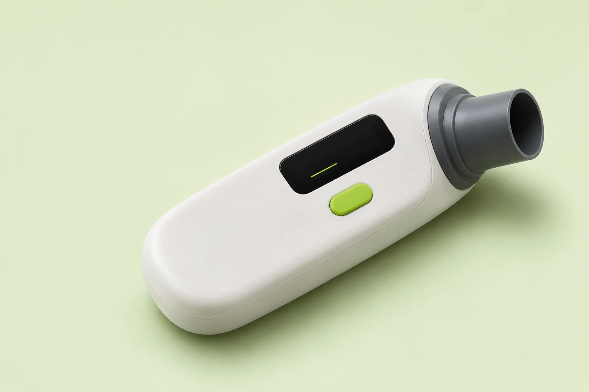

Анализ формы выдоха
Кривая «поток — объём» показывает, как меняется поток воздуха в течение попытки.
Исследовательский прототип
ASPIRO объединяет портативный спирометр и веб-интерфейс, чтобы изучать форму выдоха, качество измерений и их связь с окружающей средой.

Кривая «поток — объём» показывает, как меняется поток воздуха в течение попытки.
Проверка сигнала помогает заметить кашель, замедленный старт или обрыв выдоха.
Индекс качества воздуха (AQI) и уровень PM₂.₅ помогут сопоставлять измерения с состоянием среды.
Интерактивное демо
Сравните два сценария и посмотрите, как форма выдоха влияет на кривую и оценку качества попытки.
Синтетические данные
Демонстрация предназначена для знакомства с интерфейсом. Для оценки здоровья нужны клинические измерения.
Технология
В проекте предусмотрены 3D-печатная трубка Вентури, цифровые датчики и передача измерений в приложение.
Сужение трубки создаёт перепад давления. Цифровой датчик регистрирует его, чтобы оценить скорость воздушного потока.
ESP32 обрабатывает сигнал. Измерения температуры, влажности и давления с BME280 нужны для поправки объёма по BTPS.
По Bluetooth измерения планируется передавать в приложение. Модель машинного обучения будет анализировать форму кривой, а интерфейс покажет качество попытки.
< $45Целевая стоимость компонентов портативного прототипа
Дорожная карта
План работ из проектного документа ASPIRO.
Подобрать компоненты, спроектировать и напечатать трубку Вентури.
Настроить сбор сигнала и сверить объём по калибровочному шприцу.
Подготовить открытые данные спирометрии и обучить модель анализа формы кривой.
Связать устройство с приложением и проверить весь путь измерения.